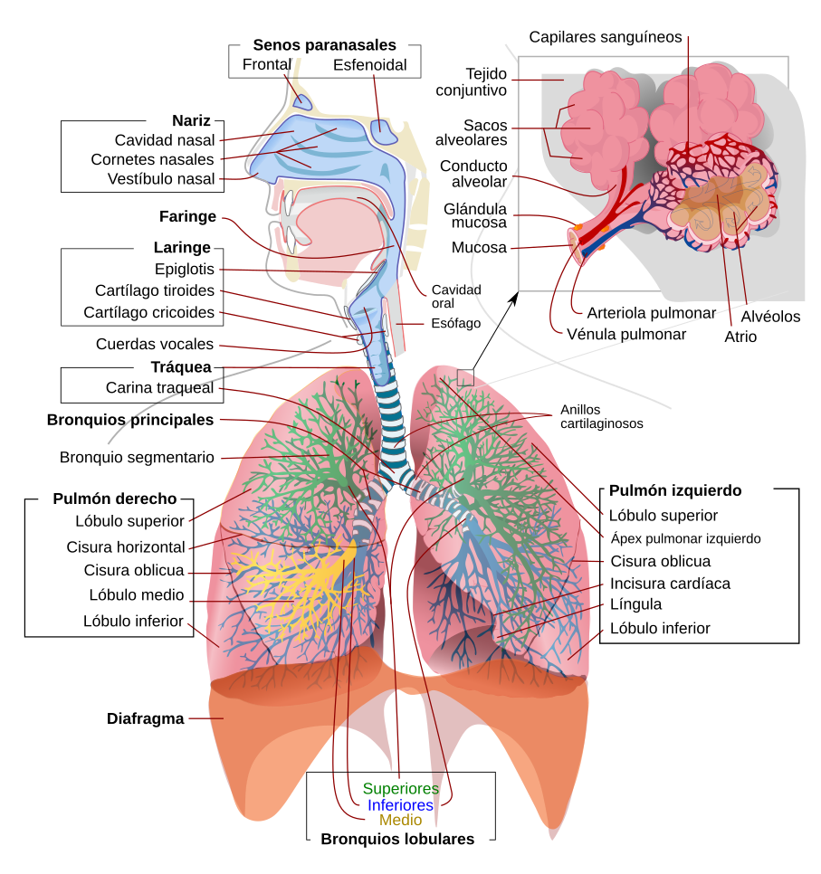
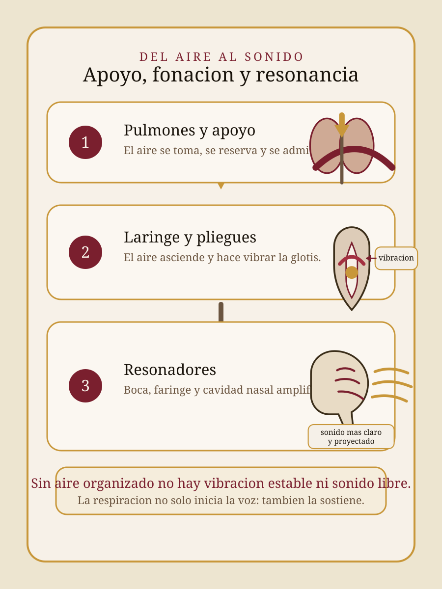
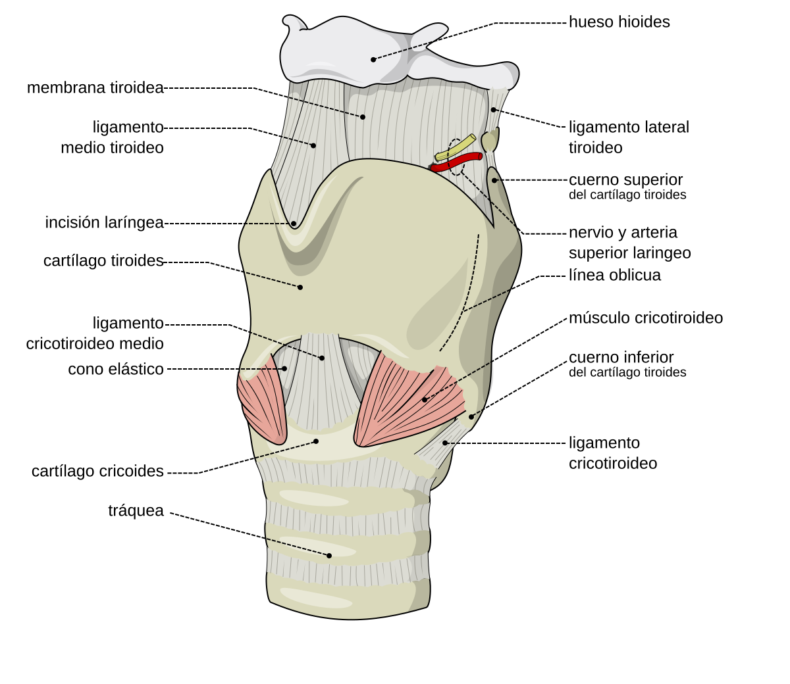
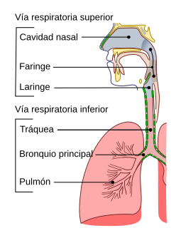
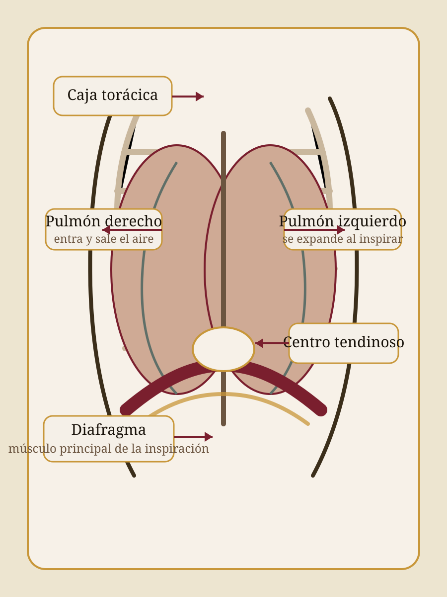
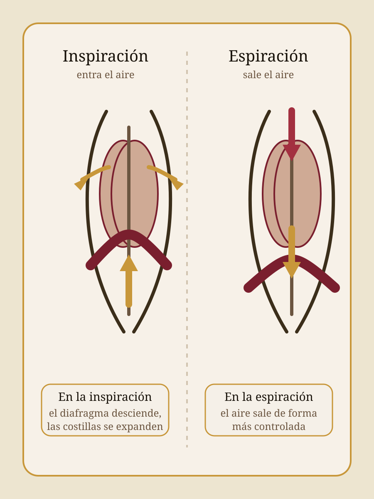
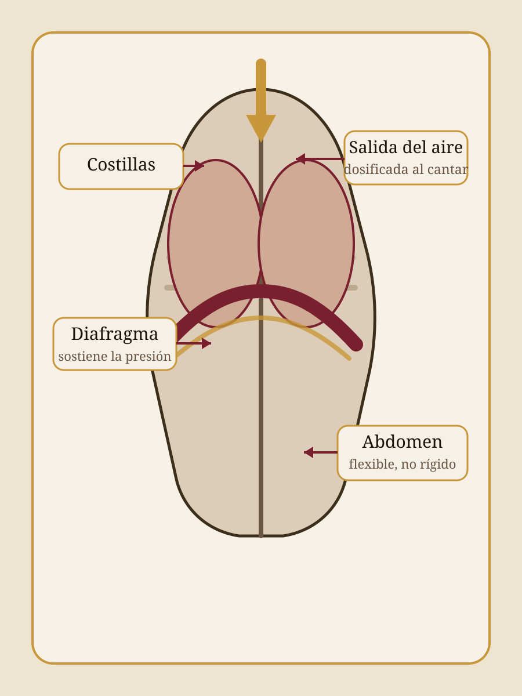
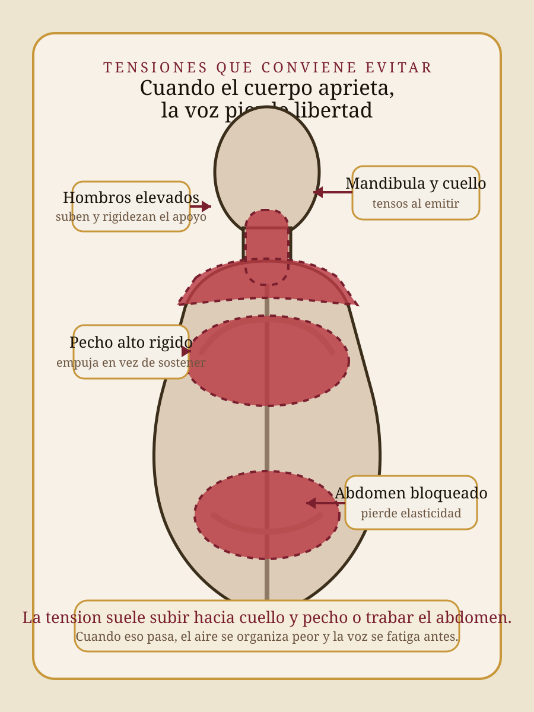

Cómo trabaja el cuerpo para que la voz salga con apoyo, estabilidad y libertad al cantar.


En canto, respirar no es solo "tomar aire": también es organizar el soplo y coordinarlo con la fonación.

Toma y administra el aire que después va a usar la voz.
En la laringe, ese aire hace vibrar los pliegues vocales y aparece el sonido.
Faringe, boca y cavidades nasales amplifican y le dan color al sonido.
Si el cuerpo está rígido o mal alineado, el aire circula peor y la voz pierde libertad.

Vías superiores: la nariz filtra, humidifica y templa el aire; la faringe y la laringe también participan en la producción vocal.
Vías inferiores: tráquea, bronquios, bronquiolos y alvéolos conducen el aire y permiten el intercambio gaseoso.
Para cantar no importa solo cuánto aire entra, sino por dónde pasa y cómo lo administramos antes de emitir el sonido.

Cuando decimos "usar el diafragma", en realidad hablamos de coordinar todo el apoyo respiratorio, no de tensar un músculo aislado.

Inspiración (activa): el diafragma baja, las costillas se expanden y entra el aire.
Espiración en el canto: el aire sale de forma dosificada y coordinada con la laringe para sostener la vibración vocal.
La técnica vocal se apoya en la coordinación de todo el sistema: no se trata de empujar el aire, sino de administrarlo con estabilidad.
| Tipo de respiración | Características | Qué pasa al cantar | ¿Conviene? |
|---|---|---|---|
| Clavicular | Eleva hombros y parte alta del pecho; superficial | Genera tensión y escaso control del soplo | No recomendable |
| Costal | Expansión lateral de costillas | Aporta estabilidad y mayor capacidad de aire | Útil |
| Abdominal / Diafragmática | Descenso del diafragma con expansión abdominal | Entrada de aire más profunda y sensación de mayor soltura | Recomendable |
| Costo-diafragmática | Combina expansión costal y acción diafragmática | Mayor equilibrio, control y apoyo vocal | Óptima ✦ |
La respiración costo-diafragmática es la que más nos conviene porque combina expansión costal, descenso del diafragma y mejor control del aire.

Cuando el cuerpo está alineado y sin tensión innecesaria, la respiración trabaja mejor y la voz sale más libre.

Genera tensión cervical y reduce el apoyo respiratorio.
Agota la reserva aérea y fuerza la emisión vocal.
Favorece la respiración clavicular y genera tensión.
Impide el descenso del diafragma y la coordinación vocal.
Reduce la reserva de aire e introduce tensiones.
Sin alineación, la voz pierde facilidad y proyección.
Para nosotros, la voz no se entiende aislada de la respiración. Cuando vías aéreas, diafragma, caja torácica, abdomen y postura trabajan coordinados, cantar se vuelve más estable, cómodo y sano.